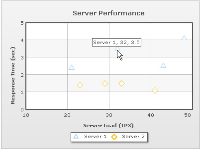
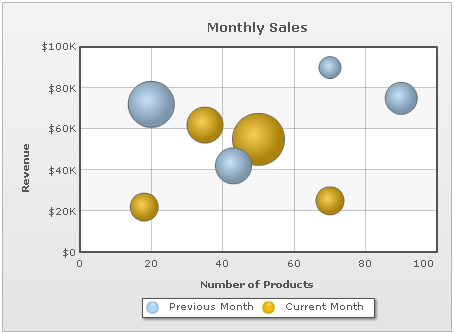

| Creating Scatter and Bubble Chart | ||||||||||||||||||||||||||||||||||||
Let's create a simple scatter chart that will visually display the Server Performance with reference to Server-Load against Response Time. Server Load and Response Time will be plotted against X-axis and Y-axis respectively. The sample data we intend to plot are tabularized as under: |
||||||||||||||||||||||||||||||||||||
|
||||||||||||||||||||||||||||||||||||
Let's see how to use FusionCharts ASP Class to plot this data into a Scatter chart: |
||||||||||||||||||||||||||||||||||||
<%@LANGUAGE="VBSCRIPT"%>
<%
'Include FusionCharts ASP Class
%>
<!--#include file="../Class/FusionCharts_Gen.asp"-->
<%
dim FC
'Create FusionCharts ASP class object
set FC = new FusionCharts
'Set chart type to Scatter Chart
Call FC.setChartType("Scatter")
'Set chart size
Call FC.setSize("300","250")
'set the relative path of the SWF file
Call FC.setSWFPath("../FusionCharts/")
dim strParam
'Define chart attributes
strParam="caption=Server Performance;yAxisName=Response Time (sec);xAxisName=Server Load (TPS)"
'Set chart attributes
Call FC.setChartParams(strParam)
'Add Category, 1st parameter take label and 2nd parameter takes x axis value
'as part of parameter list
Call FC.addCategory("10","x=10;showVerticalLine=1","")
Call FC.addCategory("20","x=20;showVerticalLine=1","")
Call FC.addCategory("30","x=30;showVerticalLine=1","")
Call FC.addCategory("40","x=40;showVerticalLine=1","")
Call FC.addCategory("50","x=50","")
'Add a new dataset
Call FC.addDataSet("Server 1","anchorRadius=6")
'Add chart data for the above dataset
'where 1st parameter for X axis value
'2nd parameter take Y axis as parameter list
'e.g y=27
Call FC.addChartData("21","y=2.4","")
Call FC.addChartData("32","y=3.5","")
Call FC.addChartData("43","y=2.5","")
Call FC.addChartData("48","y=4.1","")
'Add another dataset
Call FC.addDataSet("Server 2","anchorRadius=6")
'Add chart data for the above dataset
'where 1st parameter for X axis value
'2nd parameter take Y axis as parameter list
'e.g y=30
Call FC.addChartData("23","y=1.4","")
Call FC.addChartData("29","y=1.5","")
Call FC.addChartData("33","y=1.5","")
Call FC.addChartData("41","y=1.1","")
%>
<html>
<head>
<title>Scatter Chart : FusionCharts ASP Class</title>
<script language='javascript' src='../FusionCharts/FusionCharts.js'></script>
</head>
<body>
<%
'Render Chart with JS Embedding Method
Call FC.renderChart(false)
%>
</body>
</html> |
||||||||||||||||||||||||||||||||||||
Let's analyze the steps involved in the above code:
|
||||||||||||||||||||||||||||||||||||
Here is the Scatter chart that our FusionCharts ASP Class renders: Please go through the FusionCharts ASP Class API Reference section to know more about the functions used in the above code. |
||||||||||||||||||||||||||||||||||||
| Creating the Bubble Chart | ||||||||||||||||||||||||||||||||||||
Now, let's create yet another chart called Bubble chart that will visually display the Revenue earned in two consecutive months(Previous Month and Current Month) for the No. of products. It will also display Market share of the related No. of products. The sample data that we intend to plot can be tabularized as under: |
||||||||||||||||||||||||||||||||||||
|
||||||||||||||||||||||||||||||||||||
Let's see how to use FusionCharts ASP Class to plot this data into a Bubble chart: |
||||||||||||||||||||||||||||||||||||
<%@LANGUAGE="VBSCRIPT"%>
<%
' Include FusionCharts ASP Class
%>
<!--#include file="../Class/FusionCharts_Gen.asp"-->
<%
dim FC
' Create FusionCharts ASP class object
set FC = new FusionCharts
' Set chart type to Bubble Chart
Call FC.setChartType("bubble")
' Set chart size
Call FC.setSize("450","350")
' set the relative path of the SWF file
Call FC.setSWFPath("../FusionCharts/")
dim strParam
' Define chart attributes
strParam="caption=Monthly Sales;xAxisName=Number of Products;
yAxisName=Revenue;numberPrefix=$"
' Set chart attributes
Call FC.setChartParams(strParam)
' Add Category, 1st parameter take label and 2nd parameter takes x axis value
' as parameter list
Call FC.addCategory("0","x=0;showVerticalLine=1","")
Call FC.addCategory("20","x=20;showVerticalLine=1","")
Call FC.addCategory("40","x=40;showVerticalLine=1","")
Call FC.addCategory("60","x=60;showVerticalLine=1","")
Call FC.addCategory("80","x=80;showVerticalLine=1","")
Call FC.addCategory("100","x=100;showVerticalLine=1","")
' Add a new dataset
Call FC.addDataSet("Previous Month","")
' Add chart data for the above dataset
' where 1st parameter for X axis value
' 2nd parameter take Y and Z axis as parameter list
' e.g y=12200;z=10
Call FC.addChartData("20","y=72000;z=8","")
Call FC.addChartData("43","y=42000;z=5","")
Call FC.addChartData("70","y=90000;z=2","")
Call FC.addChartData("90","y=75000;z=4","")
' Add another dataset
Call FC.addDataSet("Current Month","")
' Add chart data for the above dataset
' where 1st parameter for X axis value
' 2nd parameter take Y and Z axis as parameter list
' e.g y=60000;z=20
Call FC.addChartData("18","y=22000;z=3","")
Call FC.addChartData("35","y=62000;z=5","")
Call FC.addChartData("50","y=55000;z=10","")
Call FC.addChartData("70","y=25000;z=3","")
%>
<html>
<head>
<title>Bubble Chart : Using FusionCharts ASP Class</title>
<script language='javascript' src='../FusionCharts/FusionCharts.js'></script>
</head>
<body>
<%
' Render Chart with JS Embedding Method
Call FC.renderChart(false)
%>
</body>
</html>
|
||||||||||||||||||||||||||||||||||||
Let's analyze the steps involved in the above code:
|
||||||||||||||||||||||||||||||||||||
Here is the Bubble chart that our FusionCharts ASP Class renders: |
||||||||||||||||||||||||||||||||||||
|  | ||||||||||||||||||||||||||||||||||||